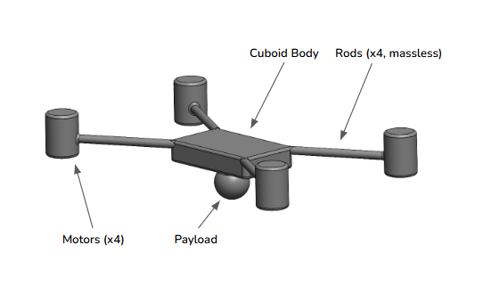
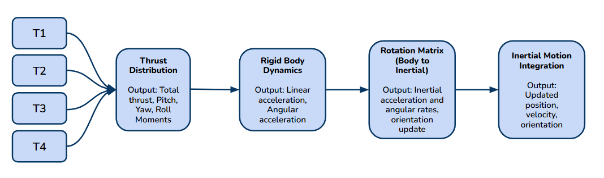
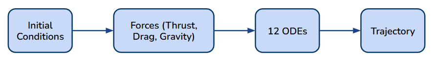
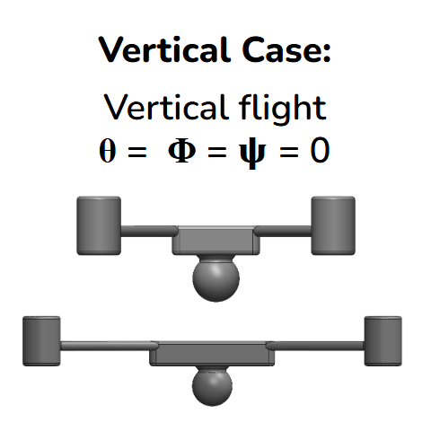
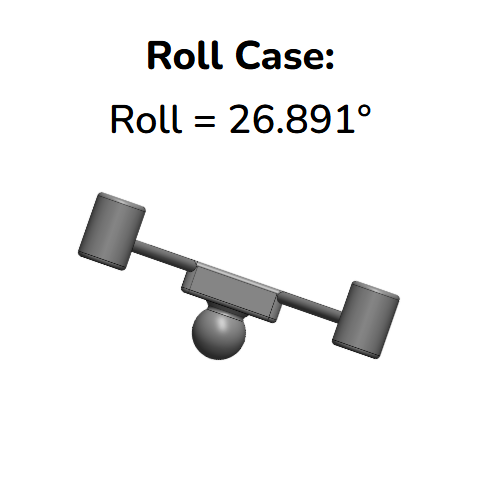
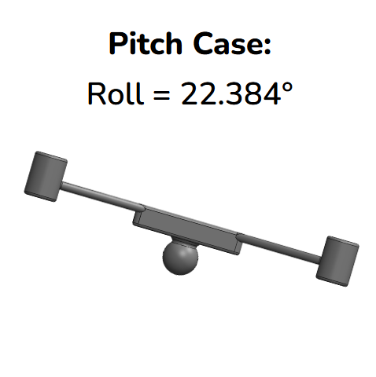
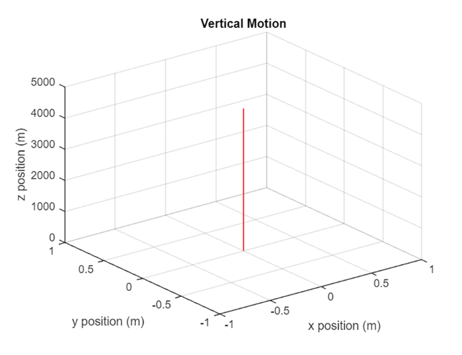
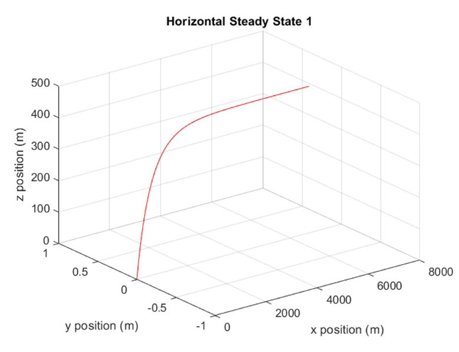
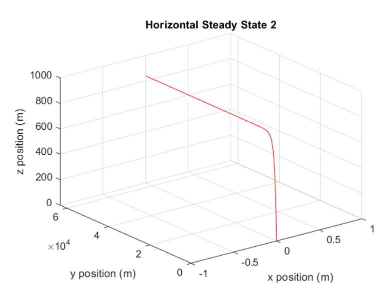

MATLAB QUADCOPTER SIMULATION
This project models the full 3D nonlinear dynamics of a quadcopter by integrating its complete 12‑state equations of motion in MATLAB. Working as part of a three‑person team, I led the MATLAB dynamics and simulation development, constructing the core model around detailed physical parameters—total mass, center of mass, and a full inertia tensor assembled from each component.
The quadcopter was reduced to simple geometric primitives (cuboid body, cylindrical rods and motors, spherical payload), allowing us to compute mass properties exactly. From this, the vehicle’s total mass of 1 kg and its center of mass at [0, 0, –0.5] in the body frame were determined, along with a symmetric inertia matrix derived from the contributions of all components. Using MATLAB’s ODE45 solver, the system couples translational motion, rotational motion, and body‑frame orientation to capture how the quadcopter accelerates, tilts, and stabilizes in three‑dimensional space.
Thrust and moment control are modeled directly from the rotor layout. Each motor contributes to total thrust, pitch and roll moments, and yaw torque through differential rotor speeds, giving the quadcopter realistic control authority in all three axes. These expressions include the full thrust–moment relationships used in the report, such as the yaw moment M₃ = Cₜ (T₁ − T₂ − T₃ + T₄), which governs rotational behavior about the vertical axis.
Body‑frame drag forces—dependent on orientation—introduce nonlinear effects such as tilt‑induced drift, asymmetric acceleration, and different horizontal performance depending on whether roll or pitch produces the motion. All of these forces feed into the equations of motion, forming a tightly coupled system that reflects the true physics of multirotor flight.
To validate the model, I ran several steady‑state cases that matched earlier analytical predictions from our 2‑D projects. With all orientation angles set to zero, the quadcopter reached a vertical steady‑state velocity of 47.095 m/s, exactly matching the previous 2‑D maximum. Under a roll angle of 26.891°, the quadcopter settled into horizontal flight with a maximum velocity of 73.6 m/s.
A similar case using a pitch angle of 22.384° produced a horizontal steady‑state velocity of 64.3 m/s, demonstrating how differences in aerodynamic coefficients Aₓ and Aᵧ directly influence performance. These validation cases confirmed that the force and moment balance was implemented correctly and that the 3‑D model reproduced expected behavior across multiple flight regimes.
As a final demonstration, I simulated a helical trajectory defined by parametric equations in the inertial frame, with the quadcopter’s yaw angle continuously rotating to face the direction of motion. Achieving this motion required solving for equilibrium thrust and orientation angles using the full force‑balance equations.
The trim solution produced T = 9.86 N, φ = –0.102 rad, and θ = 3.311×10⁻⁵ rad, values that remained constant throughout the helical climb while yaw increased linearly. Watching the quadcopter trace the helix—complete with correct orientation behavior—was a strong confirmation that the model’s twelve coupled first‑order equations were functioning cohesively and accurately representing 3‑D rigid‑body flight.








